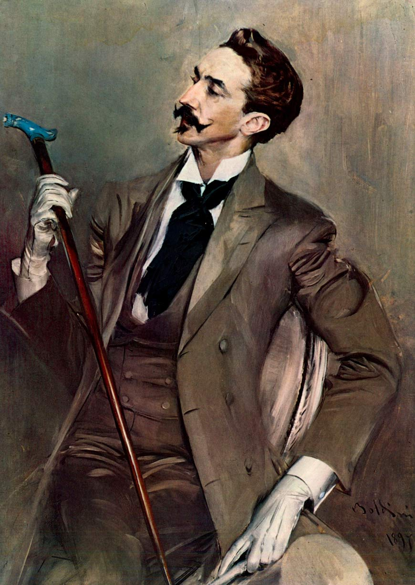
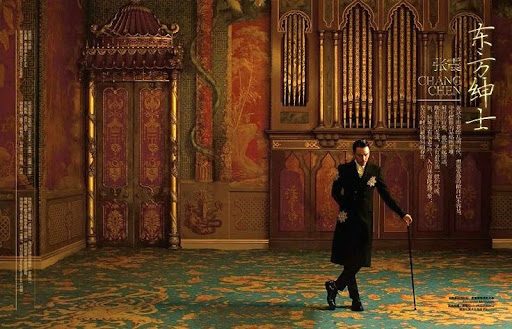
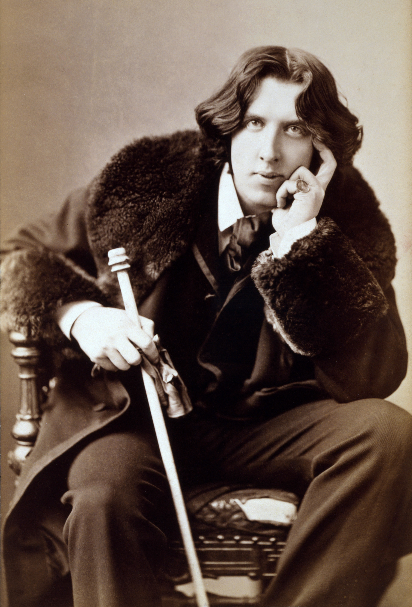
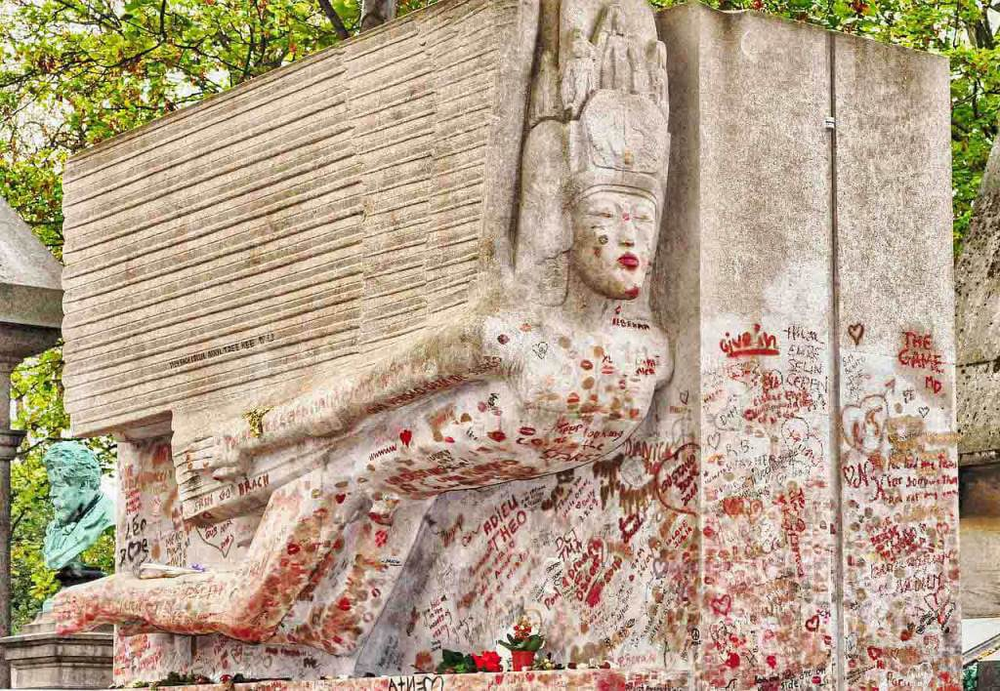
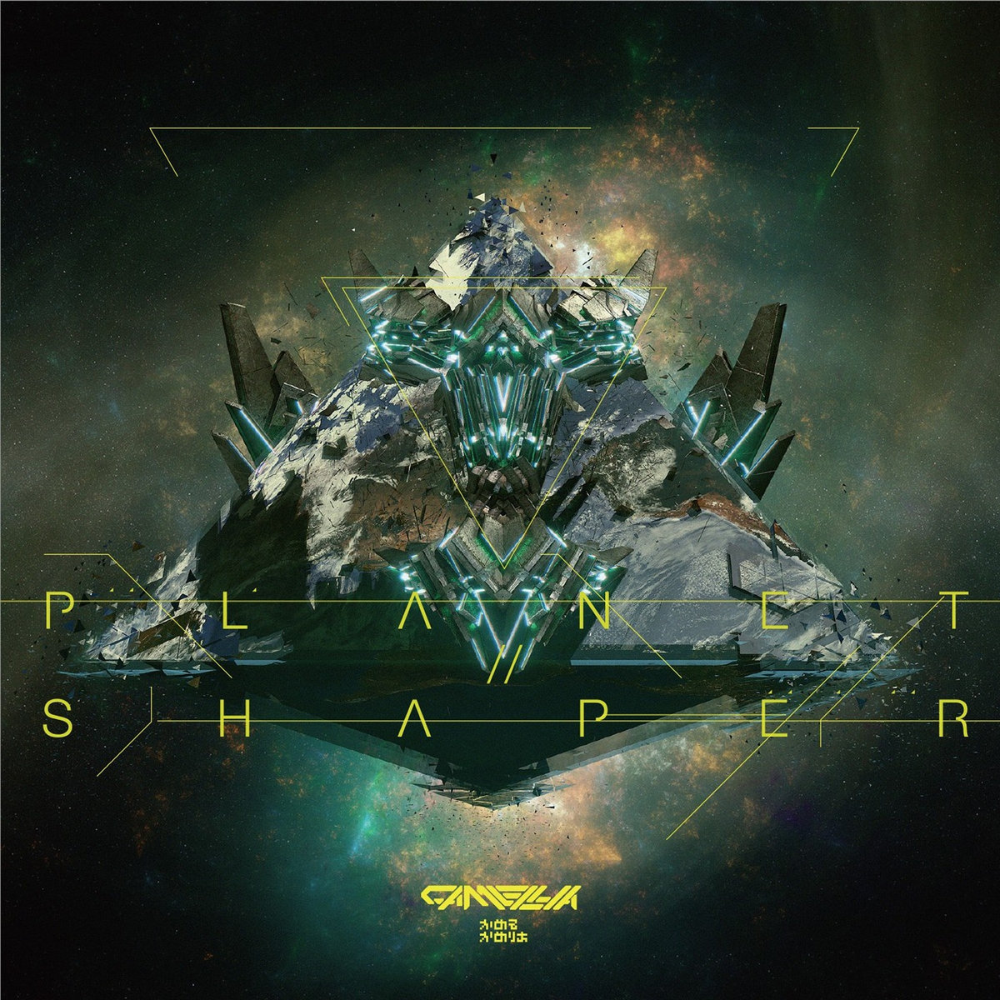

Aestheticism is an artistic movement originated in the UK during the victorian
era. It was a rejection of industrialization, morality and the belief that art is meant to teach a
lesson.
Aesthetes value beauty, style, individuality and artistic freedom above all else. One of their most
famous ideas was "art for art's sake", the belief that art does not need a moral or practical
purpose in order to have value. Instead, art exists to create beauty and evoke emotion in those who
experience it.
Aesthetes believed that art and morality were completely separate, that censorship damaged artistic
freedom, and that a work could be beautiful and emotionally powerful without needing to follow moral
values. Even today, there is still debate about whether art should be politically responsible,
morally uplifting, or completely free.
A very prominent figure within Aestheticism was the dandy, a man who treated his life and personal
image as a work of art. Dandies were characterized by impeccable clothing, sophisticated manners,
irony, emotional detachment, and disdain for vulgarity or conformity.
The first famous dandy was Beau Brummell, but Oscar Wilde is probably the most famous today.


Oscar Wilde was an irish writer, playwright and poet. He became famous not only
for his literary works but for his personality and criticism of victorian society.
Wilde was born in Dublin in 1854. He studied at Trinity College Dublin and later at University of
Oxford, where he was influenced by Walter Pater, one of the most important exponents of the
Aesthetic movement. Pater argued that life should be lived intensely and beautifully.
Once Wilde finished his studies he became known as someone who reflects perfectly the ideals of
Aestheticism. Wilde's most famous and only novel, "The Picture Of Dorian Gray", clearly shows how he
embraced the Aesthetic ideals. The story follows a young and beautiful man whose portrait ages
instead of him, reflecting the corruption of his soul after he devotes himself to pleasure
Despite his success, Wilde was prosecuted in England for "gross indecency" because of his
relationships with men, which were considered a crime at the time. He was sentenced to two years of
hard labor, a punishment that destroyed both his health and his career.
Once he was out of prison he wrote "De Profundis", a long letter about suffering art and his
relationship with Lord Alfred Douglas and "The Ballad of Reading Gaol", where he talked about his
experience in prison.
He will die in paris in 1900 at 46 in extreme misery and poverty.
(I've had the chance to visit his grave during a trip to Paris)


Learning about the figure of the dandy made me ask myself if there still are
dandies in modern society.
After thinking about it i've realized one of my favourite artists fits many of the criteria, both in
his
personal style and in his music.
Camellia is a japanese electronic music producer, he's known for his fast and high-energy tracks.
What stands out is how maximalist his music is: his style merges genres from all around the world into
incredibly complex compositions that showcase both his creativity and technical skill.
The real question is: how does this connect to Aestheticism?
While Camellia isn't a dandy in the traditional sense his artistic identity overlaps in many fields
such as the "hyper-stylization" of both his works and look.
He tends to push the limits of what is considered excessive, his music is often layered in a way
that sounds almost theatrical and that can overwhelm the listener.
Another connection to Aestheticism is how he traeats his appearance and behaviour, he is often seen
in futuristic yet elegant outfits inspired by internet culture.
There's also a sense of distance from convention, his music has deep technical roots while bending
the rules of music production and constantly shifting between genres.
These caracteristics can be seen clearly in some of his tracks between 2015 and 2021, some examples are:
